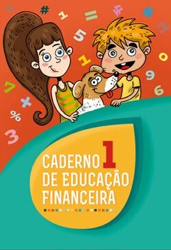

Cidadania e Desenvolvimento
Recursos e páginas de apoio para aprender, refletir e participar de forma consciente na escola, na comunidade e no mundo.
RBE
Rede de Bibliotecas Escolares e recursos para a comunidade educativa.
Abrir página ↗Escola Cidadania
Recursos e propostas para trabalhar a cidadania em contexto educativo.
Abrir página ↗Educação para a Cidadania
Informação e recursos da Direção-Geral da Educação para a cidadania.
Abrir página ↗.jpg)
RTP Ensina
Conteúdos educativos da RTP para aprender através de vídeo, áudio e outros recursos.
Abrir página ↗_edited.jpg)
Presse
Recursos relacionados com comunicação social, leitura dos media e cidadania.
Abrir página ↗
Educação Financeira
Recursos de apoio à educação financeira e ao desenvolvimento de competências para a vida.
Abrir página ↗_edited.jpg)
Microplásticos
Informação e recursos para conhecer o problema dos microplásticos e o seu impacto ambiental.
Abrir página ↗Aprender cidadania é participar
Consulta os recursos, compara informação e descobre formas de participar de maneira responsável na escola e na comunidade.